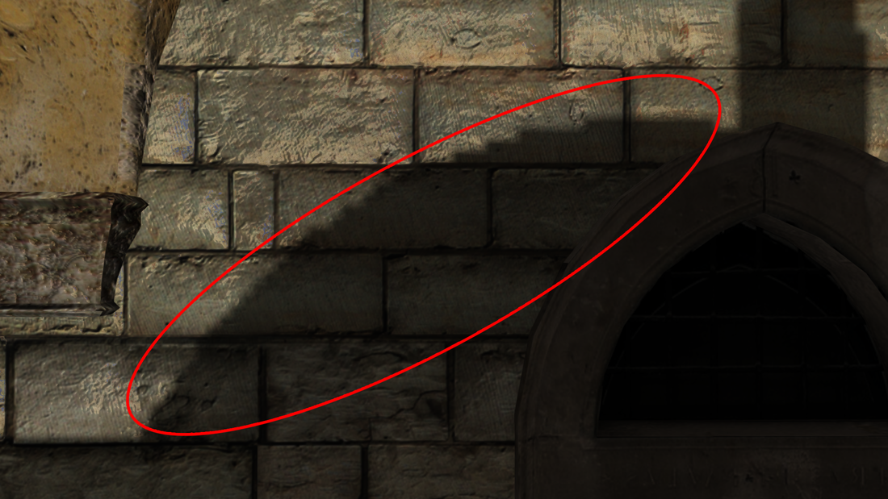

Summary
- Link to project GitHub repo
- Artifact for Master's Thesis at SMU Guildhall
- Goal: Implement a variety of industry-standard rendering techniques and implement a pipeline for them in my C++ rendering engine with OpenGL 4.5
- Forward+ tiled light culling with point lights
- Omnidirectional shadow mapping
- Screen-space ambient occlusion
- Order-independent transparency
- High Dynamic Range (HDR)
- Real-time reflections
Tiled Forward+ Rendering
- The tiled forward renderer consists of the following steps:
- Light culling compute shader pass
- Pre-depth pass for opaque geometry occlusion
- Opaque geometry render pass
- Translucent geometry render pass
At the beginning of the render step for each frame, a compute shader is run that cuts the screen up into a discrete number of tiles, back-computes camera frustums for each tile, then runs intersection tests on each light in the scene and collects those light's indices into a buffer for each corresponding tile. The tiles are computed in 16x16 pixel groups, to take advantage of GPU architecture. Pixels share memory pools with neighboring pixel in small groups, typically in collections of 8x8 or 16x16 pixels.
The compute pass carves the screen up into tiles, finds which lights intersect with which tiles, and places them into an index buffer for each tile.
During the base lighting pass, each fragment invocation determines which tile it belongs to, then goes through the index buffer and considers only the lights for that tile. In a traditional forward pipeline, each fragment rendered (even if not within view of the camera) would need to go through each light in the light list and consider it for shading. By tiling the camera frustum, we dramatically reduce the amount of lighting calculations that must be done per fragment.
The artifact can support up to 4096 lights at 60 FPS on a mid-to-high range gaming laptop.
Profiling Results
The artifact was profiled with a traditional forward pipeline, the implemented tiled forward approach, with and without a pre-depth pass, and light sizes of 1-2 meters and 3-6 meters. The two most relevant results are pictured below, to demonstrate the massive decrease in rendering times with a forward+ pipeline.

Frame time results with traditional forward rendering.

Frame time results with tiled forward rendering. Note that the CPU must wait on the light culling compute shader to finish.
Omni-directional Shadow Mapping
Demonstrating the real-time shadowmap
The shadow map is constructed by first creating 6 camera frustums at 90 degree angles at the point where the shadows should be cast. The scene is then rendered 6 times with depth only, amortized to once per frame, to each side of a depth cubemap. During the base pass, if a material is defined to receive shadows, each fragment projects its position to the point light's position and normalizes it to the [0, 1] range so it can sample into the depth cubemap. If it is further from the light than the point sampled in the cubemap, it is determined to be in shadow.
Naive sampling of the cubemap can lead to egregious artifacts in the rendered scene. The three most obvious are shadow acne, peter panning, and perspective / projective aliasing.
Shadow Acne

An example of shadow acne in the scene
Shadow acne is due to the texel density mismatch between the shadowmap and the material being rendered. The shadowmap is typically much smaller than whatever material is currently being sampled, so stair-stepping happens as the material samples into the shadowmap. Shadow acne can be fixed by subtracting a very small epsilon value when sampling into the depth map.
Peter Panning
Peter panning occurs due to the epsilon value that is subtracted when sampling into the shadowmap. This makes the angle that's being sampled shallower, and can "pull" shadows off of thin geometry, making them look like they're floating.
An example of peter panning in the scene
While peter panning cannot be entirely alleviated using this shadowmapping technique, it can be mostly mitigated by ensuring that the epsilon value is sufficiently small.
Perspective and Projective Aliasing
Perspective aliasing occurs because the ratio because of the texel density mismatch between the shadowmap and the surface being rendered.

An example of perspective aliasing in the scene
One approach to alleviating perspective aliasing is by using percentage closer filtering of the shadowmap, which ups the number of samples taken per-pixel rendered on a surface but dramatically improves the perspective aliasing as seen above. To do percentage closer filtering, a sampling disk is constructed around the point being sampled and scaled by the distance of the fragment to the camera, so that shadows closer to the viewer are softer and computation time is not spent softening those further away. Once the sampling disk is constructed and samples have been taken from the shadowmap their values are then summed up and divided by the number of samples to yield a "percent-in-shadow" value, which is then used to multiply into the Lambertian diffuse and Blinn-Phong specular component of the shadow casting light.

An example of projective aliasing in the scene
Projective aliasing occurs as the tangent plane of the geometry becomes parallel to the shadow casting light's direction. It can be alleviated somewhat by using the percentage closer filtering technique as described above, but cannot be entirely alleviated with this technique.
Screen-space Ambient Occlusion
Screen-space ambient occlusion (SSAO) is a technique to approximate ambient occlusion between geometry in real-time. The technique used here is based on a hemispherical based sampling approach originally developed by Crytek.

An example of ambient occlusion
This specific approach to SSAO consists of a full screen pass before the base lighting pass and after the pre-depth pass, that uses both the depth buffer and a map of the scene normals in view-space that is rendered out with the pre-depth pass. Each fragment sampled uses a constructed sampling hemisphere oriented the normal sampled from the scene normals map. For each point in the sampling hemisphere, a depth value is sampled from the depth buffer for occlusion - the amount of occluded samples in the depth buffer divided by the number of samples taken becomes the AO factor that is written into the SSAO buffer.

The unblurred SSAO buffer
The sampling hemisphere used must be rotated for every other pixel in the SSAO buffer for two reasons. First, if the same sampling hemisphere is not used across each pixel, then it must be reconstructed for every pixel in the buffer which can add a significant amount of time to the SSAO pass. Second, if the sampling hemisphere is not rotated, it creates artifacting that does not resemble AO.
After rotating the sampling hemisphere for every other pixel, the resultant buffer appears grainy and it shows in the final rendered scene. To account for this graininess, a depth-sensitive blur pass is run on the SSAO buffer.
The unblurred SSAO buffer
The blurred SSAO buffer
Order-Independent Transparency
This approach to order-independent transparency (OIT) is based on Morgan McGuire's approach, Weighted Blended Order-Independent Transparency. The motivation behind OIT lies in the non-commutative property of the alpha blending operation:
The alpha blending operation
If meshes are non-intersecting, a simple back-to-front sorting of meshes with transparency can be done to ensure correct rendering of the materials. The problem lies in intersecting geometry.

Which mesh do we render first?
Because the alpha blending operator is non-commutative, an order-indepent approach to transparency must be employed at the pixel-level. To do this, a separate transparency pass is used utilizing two separate render buffers - a revealage buffer which stores pre-multiplied alpha values and an accumulation buffer that stores color values multiplied by the source alpha of incoming fragments.
An example of the revealage and accumulation buffers
Incoming fragments are weighted by a function that is dependent on distance from camera to allow closer fragments to appear in front of further-away fragments, thus making the operation order-independent.
High-Dynamic Range Lighting
High-dynamic-range (HDR) rendering is an attempt to simulate two separate phenomena: the ability of the human eye to perceive detail in a large lighting range within the same area, and its ability to adapt to large light changes between areas. It is a pipeline change that affects every stage of the rendering process.
The first step is to convert to a 16-bit-per-channel color target for scene color. Lighting calculations are done unbounded when objects are rendered, then a post-pass is done on the scene color target to map those color values back down to a 0-1 range.
Tonemapping Operator
The tonemapping operator chosen was taken from John Hable's GDC talk on Uncharted 2's filmic tonemapping. Filmic tonemapping was chosen due to its preservation of the saturation and range in color over something like Reinhardt tonemapping. Below is a screenshot taken from the artifact using no tonemapping, simple Reinhardt tonemapping, and filmic tonemapping.

No tonemapping applied to the scene
Reinhardt tonemapping applied to the scene

Filmic tonemapping applied to the scene
Note that filmic tonemapping keeps the saturation and highlights of the scene, without overly darkening it or desaturating it.
Auto-Eye Adaption
Auto-eye adaption is a phenomenon most notable when going from an indoor environment to an outdoor one or vice-versa. The outdoor area may seem blown out and extremely bright when viewing it through a doorway, but those values soon dim down and everything comes into view as the character steps outside. There are many techniques to accomplish this effect, and the one chosen for this thesis was auto-exposure volumes.
When the player enters an exposure volume, the current exposure is interpolated to the target exposure. If the player is not in an exposure volume, the default exposure level specified for the scene is used.
An example of auto-eye adaption in the scene
Dynamic Environment Mapping
Dynamic environment mapping was a small portion of the thesis, designed to understand the process of rendering the scene multiple times for a variety of different reasons (shadows, pre-depth, etc). The technique itself simply involves writing to a cubemap color target, amortized out to one side per frame.
Thesis Paper
Below is the thesis paper submitted to obtain a master's degree in Interactive Technology at the Guildhall at Southern Methodist University.
Thesis Defense Presentation
Below is the presentation for the defense of the thesis.